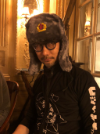

O básico

É uma franquia de jogos stealth (esquece o MGR) tendo como protagonista Solid Snake e/ou Big Boss, o Naked Snake.
O jogo, criado por Hideo Kojima, tem duas "séries" diferentes, porém, que seguem a mesma linha cronológica.
Em Metal Gear (Metal Gear e Metal Gear 2: Solid), vemos as primeiras missões de Solid Snake e o início de seu relacionamento conflituoso com Big Boss.
Já em Metal Gear Solid temos muitos outros títulos, desde a linha principal até exclusivos de PSP. Por isso, irei passar em uma lista não-númerada com a maioria dos títulos:
- Metal Gear Solid
- Metal Gear Solid 2: Sons of Liberty
- Metal Gear Solid: The Twin Snakes (spin-off)
- Metal Gear Solid 3: Snake Eater
- Metal Gear Solid: Portable Ops (parte spin-off e parte considerada canônica)
- Metal Gear Solid 4: The Guns of Patriots
- Metal Gear Solid: Peace Walker (Inicialmente, exclusivo de PSP)
- Metal Gear Solid 5: The Grounds Zeroes (Apenas o prologo de MGS 5: TPP
- Metal Gear Solid 5: The Phantom Pain
Em Metal Gear Solid, nós vemos muita coisa acontecer. Temos MGS 1 focado em Solid Snake enfrentando seu "irmão" Liquid Snake, já em MGS 2 vemos Raiden enfrentar Solidus (outro "irmão" de Solid Snake).
Inclusive, é em MGS que descobrimos que Solid, Liquid e Solidus são clones de Big Boss. E é com esse gancho que vemos um jovem Big Boss (ainda chamado de Naked Snake) impedindo uma guerra nuclear entre ocidente e oriente, em MGS 3: Snake Eater. Tanto o Portable Ops quanto Peace Walker são sequências diretas de MGS 3, nos apresentando o grande Kazuhira Miller e a Mother Base.
Já em MGS 4: Guns of Patriots, voltamos a Solid Snake sofrendo de envelhecimento precoce causado pelo vírus Die Fox, com isso somos apresentados ao Old Snake, o mesmo Solid, porém mais velho e prestes a morrer, que deve enfrentar de uma vez por todas Liquid Ocelot, uma nova versão de Liquid Snake. E há também um reecontro bem tocante entre Old Snake e Big Boss.
E então voltamos ao passado com um renegado Big Boss e sua MSF (Militares Sans Frontières), com o apoio de Kazuhira Miller, obviamente. Tanto em MGS V: Ground Zeroes e MGS V: The Phantom Pain, Snake deve enfrentar a Cipher e o misterioso Skull Face.
No entanto, é em Ground Zeroes que Kaz Miller pronúncia a épica frase: "They played like us damn fiddle!"